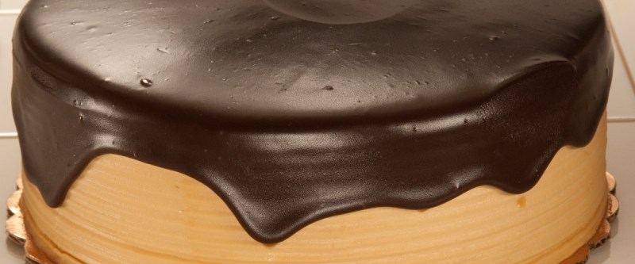

Торт Пломбир

Бисквит: 5 яиц взбить со стаканом сахара и ванилином, ввести стакан муки лопаткой движениями сверху-вниз, выпекать при температуре 160 градусов в течение часа, НЕ открывая духовку. Достать, дать остыть, разрезать на две части, пропитать разведенным алкоголем. (это может быть коньяк, ром, любой ликер. 2 ст.л. алкоголя развести с 2 ст.л. очищенной воды)
Крем: 3/4 стакана молока смешать с 2 ст.л. с горкой муки, 1 стаканом сахара и 2 яйцами и варить, помешивая, до загустения. Дать остыть, взбить с 200 гр. мягкого сливочного масла.
Глазурь: 4 ст.л. сметаны + 4 ч.л. какао + 4 ст.л. сахара смешать, подогреть до расстворения сахара, добавить 50 гр. сливочного масла.